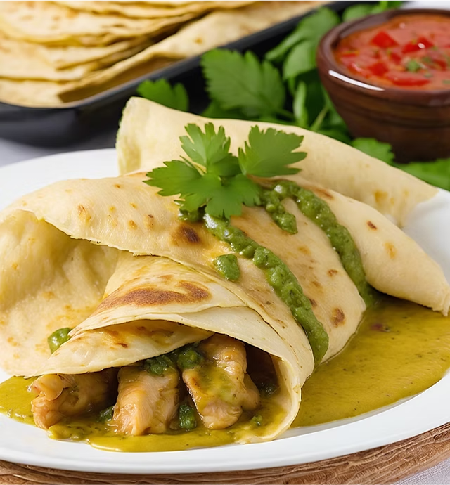

Deliciosa Receta de Crepas de Pollo
Descubre cómo preparar unas exquisitas crepas de pollo estilo poblano en la comodidad de tu hogar. Con ingredientes simples y pasos fáciles, sorprenderás a tu familia con este platillo tradicional y lleno de sabor.
Procedimiento
DERRITE la mitad de la margarina en un sartén grande, fríe el ajo, la cebolla, el elote y los chiles. Una vez que todo esté sofrito, agrega el pollo. Sazona con sal y pimienta. Reserva.
FRÍE en la margarina restante la cebolla, el ajo y el huitlacoche. Una vez cocidos, agrega la crema, sazona bien con sal y pimienta, y licúa.
RELLENA las crepas con la mezcla de pollo y enróllalas. Hornea a temperatura media 15 minutos.
BAÑA con la salsa de huitlacoche una vez cocidas y espolvorea el queso.